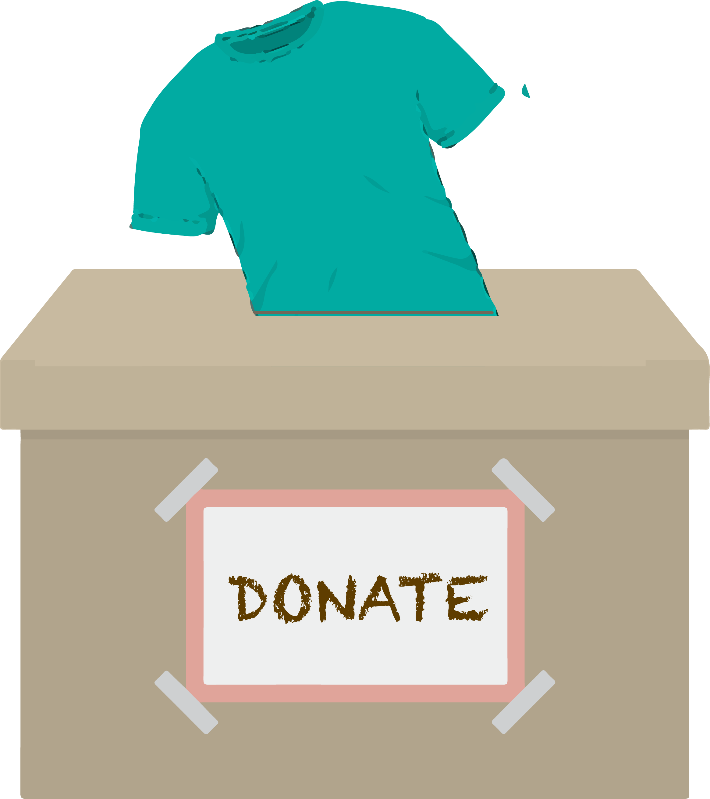
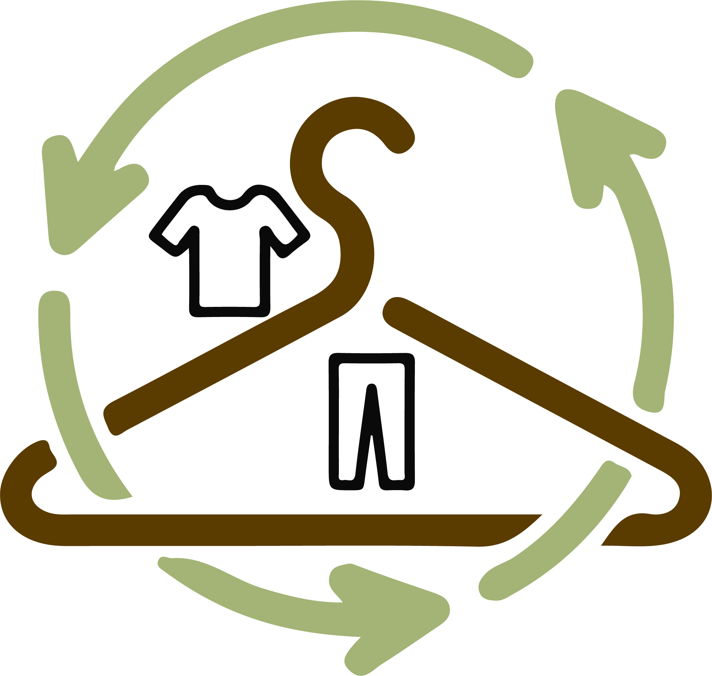

What can you do?
Now that you know that you know the impacts of fast fashion on the environment, here are ways you can reduce your impact.
- Buy Less
- Shop sustainable.
- Donate used clothing 
- Recycle garments 

While buying clothes is exciting, it creates a large waste problem. As mentioned, fast fashion clothing is poor quality and does not last long. This becomes a problem since people will end up throwing out the clothing faster than they would if buying better quality items. When buying new clothing in the future, it is worth the money to invest in higher quality items so they will last longer.
Shopping sustainable is very important. When shoping at a sustainable store you know that the employees are working is safe conditions and being compensated fairly. According to Global Citizen , "Sustainable brands pay attention to every step of the supply chain when producing and selling their products, from sourcing recycled materials to ensuring garment workers are paid fair wages"
When wanting to get rid of old clothing. Donate your used clothing so that they can be used by another person and have a second life.
While buying clothes is exciting, it creates a large waste problem. As mentioned, fast fashion clothing is poor quality and does not last long. This becomes a problem since people will end up throwing out the clothing faster than they would if buying better quality items. When buying new clothing in the future, it is worth the money to invest in higher quality items so they will last longer.